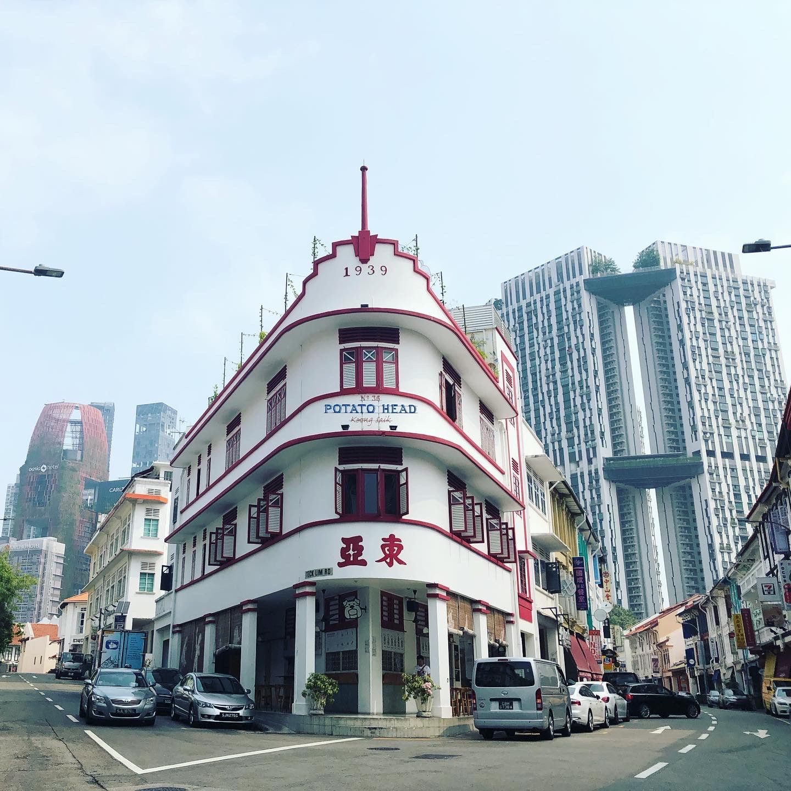
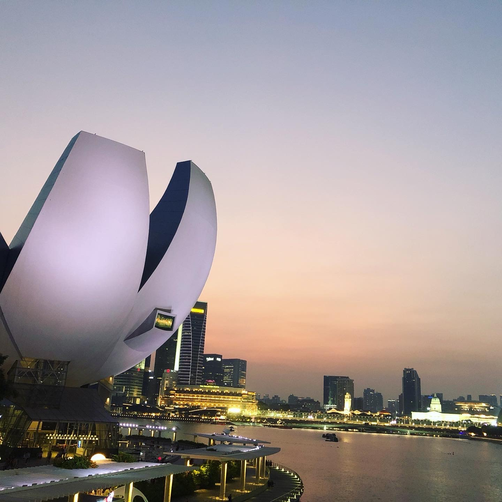
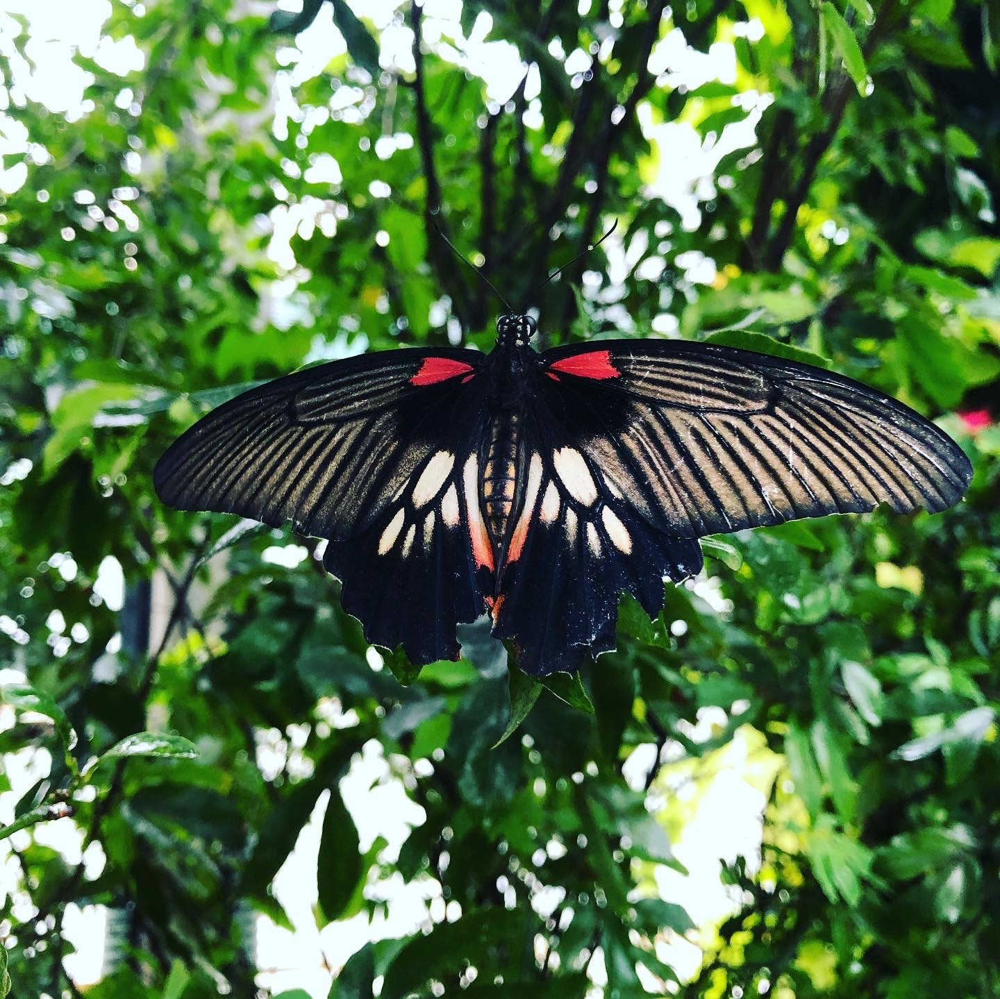
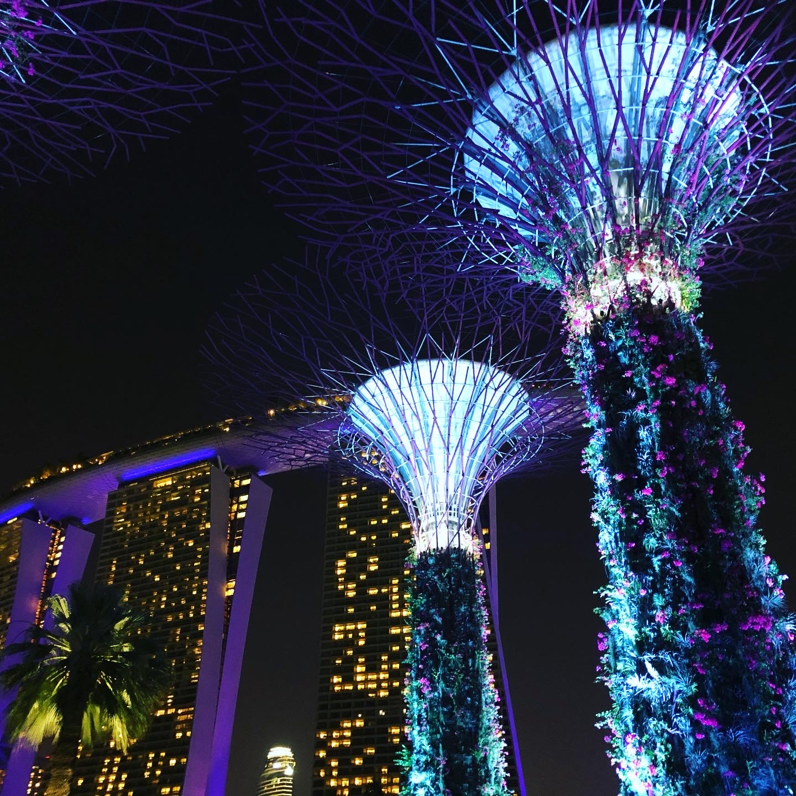

<!DOCTYPE html>
<html>
<title>Sunny Liu</title>
<meta charset="UTF-8">
<meta name="viewport" content="width=device-width, initial-scale=1">
<link rel="stylesheet" href="https://www.w3schools.com/w3css/4/w3.css">
<link rel="stylesheet" href="https://fonts.googleapis.com/css?family=Montserrat">
<link rel="stylesheet" href="https://cdnjs.cloudflare.com/ajax/libs/font-awesome/4.7.0/css/font-awesome.min.css">
<style>
body, h1,h2,h3,h4,h5,h6 {font-family: "Montserrat", sans-serif}
.w3-row-padding img {margin-bottom: 12px}
.bgimg {
  background-position: center;
  background-repeat: no-repeat;
  background-size: cover;
  background-image: url('sunny\ pic1.JPG');
  min-height: 100%;
}
</style>
<body style="background-color: rgb(240, 224, 204);">

<!-- Sidebar with image -->
<nav class="w3-sidebar w3-hide-medium w3-hide-small" style="width:40%">
  <div class="bgimg"></div>
</nav>

<!-- Hidden Sidebar (reveals when clicked on menu icon)-->
<nav class="w3-sidebar w3-black w3-animate-right w3-xxlarge" style="display:none;padding-top:150px;right:0;z-index:2" id="mySidebar">
  <a href="javascript:void(0)" onclick="closeNav()" class="w3-button w3-black w3-xxxlarge w3-display-topright" style="padding:0 12px;">
    <i class="fa fa-remove"></i>
  </a>
  <div class="w3-bar-block w3-center">
    <a href="#" class="w3-bar-item w3-button w3-text-grey w3-hover-black" onclick="closeNav()">Home</a>
    <a href="#portfolio" class="w3-bar-item w3-button w3-text-grey w3-hover-black" onclick="closeNav()">Portfolio</a>
    <a href="#about" class="w3-bar-item w3-button w3-text-grey w3-hover-black" onclick="closeNav()">About</a>
    <a href="#contact" class="w3-bar-item w3-button w3-text-grey w3-hover-black" onclick="closeNav()">Contact</a>
  </div>
</nav>

<!-- Page Content -->
<div class="w3-main w3-padding-large" style="margin-left:40%">

  <!-- Menu icon to open sidebar -->
  <span class="w3-button w3-top w3-white w3-xxlarge w3-text-grey w3-hover-text-black" style="width:auto;right:0;" onclick="openNav()"><i class="fa fa-bars"></i></span>

  <!-- Header -->
  <header class="w3-container w3-center" style="padding:128px 16px" id="home">
    <h1 class="w3-jumbo"><b>Sunny Liu</b></h1>
    <p>Photographer and Web Designer.</p>
    
    
    <a href="https://drive.google.com/file/d/1aGRruy6g3hbPrBWz74vOK2wUyF3_mZVU/view?usp=sharing"><button class="w3-button w3-light-grey w3-padding-large w3-margin-top">
          <i class="fa fa-eye"></i> View Resume
        </a></button>
  </header>

  <!-- Portfolio Section -->
  <div class="w3-padding-32 w3-content" id="portfolio">
    <h2 class="w3-text-grey">My Portfolio<i class="fa fa-hand-o-down" aria-hidden="true"></i></h2>
    <hr class="w3-opacity">

    <!-- Grid for photos -->
    <div class="w3-row-padding" style="margin:0 -16px">
      <div class="w3-half">
        
        
        
        
        
      </div>

      <div class="w3-half">
        
        
      </div>
      <div class="w3-half">
      
        
    </div>
    <!-- End photo grid -->
    </div>
  <!-- End Portfolio Section -->
  </div>

  <!-- About Section -->
  <div class="w3-content w3-justify w3-text-grey w3-padding-32" id="about">
    <h2>About Me<i class="fa fa-hand-o-down" aria-hidden="true"></i></h2>
    <hr class="w3-opacity">
    <p><i class="fa fa-gratipay" aria-hidden="true"><b>Hello！我是像太陽一樣溫暖的人 - Sunny!</b></i></p>
    <p>擁有新加坡機場地勤服務經驗。工作培訓間學習力、抗壓性強，工作時服務客戶善於主動了解顧客潛在需求，處理過上百個危機事件、有能力適應不同文化及吸收各種領域的知識、個性樂觀能接受任何新挑戰，在團隊合作中總是扮演著傾聽與溝通的角色。</p>
    <h3 class="w3-padding-16">My Skills</h3>
    <p class="w3-wide">Adobe Premiere</p>
    <div class="w3-light-grey">
      <div class="w3-container w3-center w3-padding-small w3-dark-grey" style="width:70%";background-color: rgb(212,178,106)!important;><i class="fa fa-arrow-circle-right" aria-hidden="true"></i></div>
    </div>
    <p class="w3-wide">Adobe Photoshop</p>
    <div class="w3-light-grey">
      <div class="w3-container w3-center w3-padding-small w3-dark-grey" style="width:70%";background-color: rgb(212,178,106)!important;><i class="fa fa-arrow-circle-right" aria-hidden="true"></i></div>
    </div>
    <p class="w3-wide">Adobe Illustrator</p>
    <div class="w3-light-grey">
      <div class="w3-container w3-center w3-padding-small w3-dark-grey" style="width:50%";background-color: rgb(212,178,106)!important;><i class="fa fa-arrow-circle-right" aria-hidden="true"></i></div>
    </div>
    <p class="w3-wide">Basic HTML / CSS</p>
    <div class="w3-light-grey">
      <div class="w3-container w3-center w3-padding-small w3-dark-grey" style="width:30%";background-color: rgb(212,178,106)!important;><i class="fa fa-arrow-circle-right" aria-hidden="true"></i></div>
    </div><br>

    <div class="w3-row w3-center w3-dark-grey w3-padding-16 w3-section">
      <div class="w3-quarter w3-section">
        <span class="w3-xlarge"><i class="fa fa-bicycle" aria-hidden="true"></i></span><br>
        運動
      </div>
      <div class="w3-quarter w3-section">
        <span class="w3-xlarge"><i class="fa fa-paint-brush" aria-hidden="true"></i></span><br>
        畫畫
      </div>
      <div class="w3-quarter w3-section">
        <span class="w3-xlarge"><i class="fa fa-music" aria-hidden="true"></i></span><br>
        音樂
      </div>
      <div class="w3-quarter w3-section">
        <span class="w3-xlarge"><i class="fa fa-plane" aria-hidden="true"></i></span><br>
        旅行
      </div>
    </div>

    <a href="https://drive.google.com/file/d/1aGRruy6g3hbPrBWz74vOK2wUyF3_mZVU/view?usp=sharing"><button class="w3-button w3-light-grey w3-padding-large w3-section">
      <i class="fa fa-eye"></i> View Resume
    </a></button>

    <!-- Testimonials -->
    <h3 class="w3-padding-24">Working Experiences</h3>
    
    <p><span class="w3-large w3-text-black w3-margin-right">Singapore Changi Airport</span> Changi Experience Ambassador</p>
    <p><ul>
        <li>顧客關係管理: 主要具備良好溝通力、危機感重且擁有同理心特質能理解每位客人的需求，包含解決客訴與醫療事故、危機事件處理</li>
        <li>機場運務管理: 與航空公司、機場各部門員工緊密配合，於機場內盡心處理旅客各種問題，包含指引方向、提供航班及轉機資訊。</li>
        <li>協助團隊輔導新人考核、熟悉機場環境及工作系統。</li>
        <li>維護顧客關係: 工作中除了處理旅客各種問題外還提供售後服務並且結合顧客與團隊意見，以供公司做改進因而獲得最佳服務團隊的殊榮與每季機場服務最佳的特殊胸針獎勵。</li>
    </ul>
</p><br>
   
    
    <p><span class="w3-large w3-text-black w3-margin-right">三普旅行社</span>導遊</p>
    <p>
        <ul>
            <li>帶領日本學生遊玩台北、體驗當地文化及擔任翻譯橋樑。</li>
            <li>顧客服務管理 : 包含行程、餐廳、交通安排等。</li>
            <li>保障顧客安全、處理顧客緊急狀況。</li>
          </ul>
    </p><br>
    
    
    <p><span class="w3-large w3-text-black w3-margin-right">劍湖山股份有限公司</span>廣銷實習生</p>
    <p>
    <ul>
        <li>兩個月的實習期間與同事為公司拍攝3組暑假宣傳影片，從劇本、演出、拍攝到剪輯都是我們一手包辦，其中一支還被公司選為主要推廣影片並獲得8000多的點擊率！</li>
    </ul>
    </p><br>

    
    <p><span class="w3-large w3-text-black w3-margin-right">國際副校長室</span>副校長秘書助理</p>
    <p>
        <ul>
            <li>高效率完成秘書交辦事項 (如: 翻譯文件、安排接待學校貴賓之行程、負責辦公室環境與設備之清潔與維護)。</li>
            <li>資料文書整合，具電腦文書Word、Excel、PowerPoint等處理能力。</li>
            <li>每月辦公室文具盤點及庫存管理。</li>
          </ul>
    </p><br>
    
    <!-- Grid for CV -->
    <h3 class="w3-padding-16">My CV</h3>
    <iframe src="https://drive.google.com/file/d/1aGRruy6g3hbPrBWz74vOK2wUyF3_mZVU/preview" width="640" height="480"></iframe>
    <!-- End Grid/CV -->
    
  <!-- End About Section -->

  <!-- Contact Section -->
  <div class="w3-padding-32 w3-content w3-text-grey" id="contact" style="margin-bottom:64px">
    <h2>Contact Me<i class="fa fa-hand-o-down" aria-hidden="true"></i></h2>
    <hr class="w3-opacity">

    <div class="w3-section">
      <p><i class="fa fa-map-marker fa-fw w3-xlarge w3-margin-right"></i> Hsinchu, Taiwan</p>
      <p><i class="fa fa-phone fa-fw w3-xlarge w3-margin-right"></i> Phone: +886 0938860324</p>
      <p><i class="fa fa-envelope fa-fw w3-xlarge w3-margin-right"> </i> Email: ss920521@yahoo.com.tw</p>
    </div>
    
    <!-- Image of location/map -->   
    <p>謝謝蒞臨我的網站，有任何問題都能與我聯絡喔:</p>
    <form action="/action_page.php" target="_blank">
      <p><input class="w3-input w3-padding-16 w3-border" type="text" placeholder="姓名" required name="Name"></p>
      <p><input class="w3-input w3-padding-16 w3-border" type="text" placeholder="Email" required name="Email"></p>
      <p><input class="w3-input w3-padding-16 w3-border" type="text" placeholder="訊息" required name="Message"></p>
      <p>
        <a href="mailto:xrworldinthefuture"><button class="w3-button w3-light-grey w3-padding-large" type="提交">
          <i class="fa fa-paper-plane"></i> 傳送
        </a></button>
      </p>
    </form>
    
  <!-- End Contact Section -->
  </div>  
  
  <!-- Footer -->
  <footer class="w3-container w3-padding-64 w3-light-grey w3-center w3-opacity w3-xlarge" style="margin:-24px">
    <a href="https://www.facebook.com/sunnyliu860324/"><i class="fa fa-facebook-official w3-hover-opacity"></i></a>
    <a href="https://www.instagram.com/sunnyliu0324/"><i class="fa fa-instagram w3-hover-opacity"></i></a>
    <a href="https://www.linkedin.com/in/yu-tzu-liu-154220145/"><i class="fa fa-linkedin w3-hover-opacity"></i></a>
    <p class="w3-medium">Created By <a href="https://www.instagram.com/sunnyliu0324/" target="_blank" class="w3-hover-text-green">SUNNY LIU</a></p>
  <!-- End footer -->
  </footer>
  
<!-- END PAGE CONTENT -->
</div>

<script>
// Open and close sidebar
function openNav() {
  document.getElementById("mySidebar").style.width = "60%";
  document.getElementById("mySidebar").style.display = "block";
}

function closeNav() {
  document.getElementById("mySidebar").style.display = "none";
}
</script>

</body>
</html>
